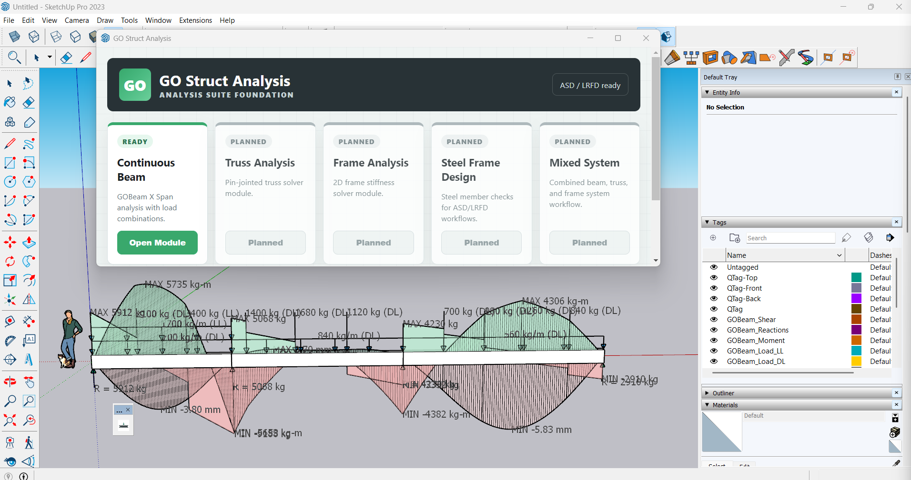
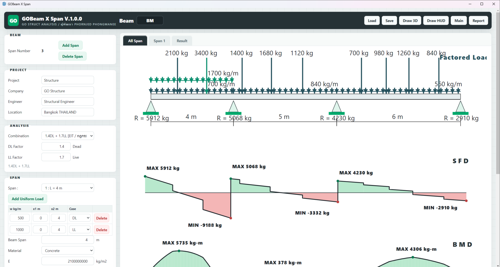
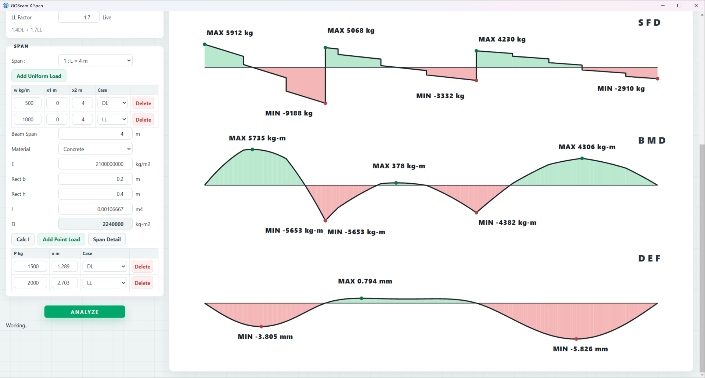
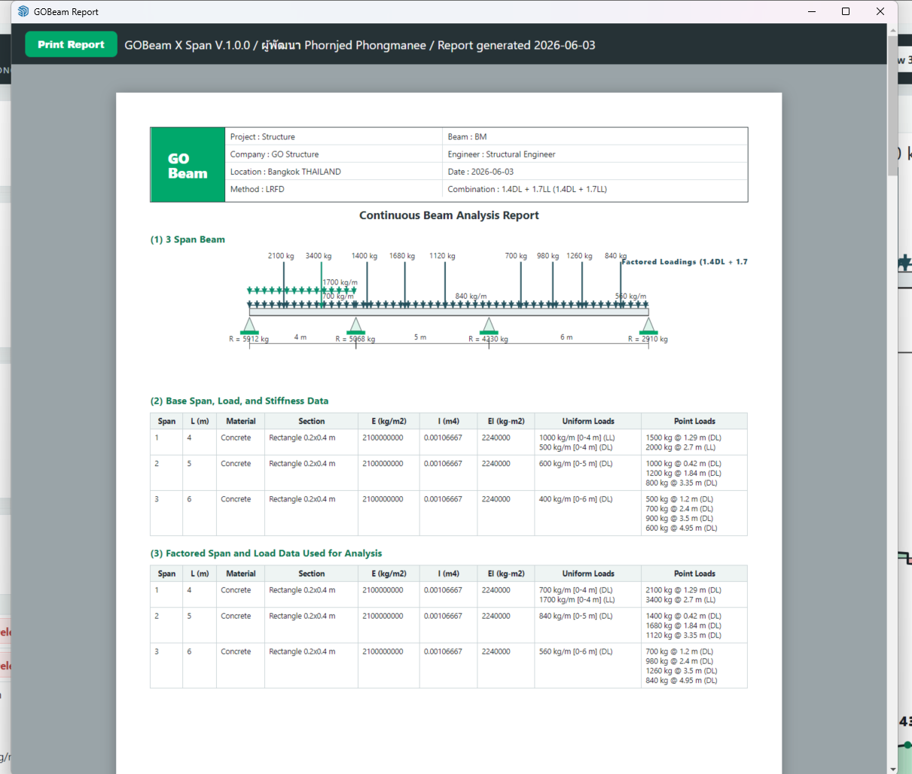
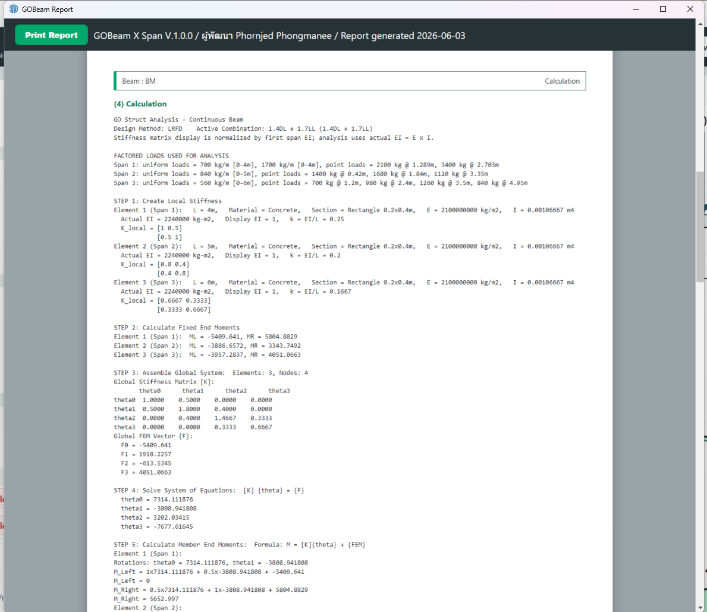

คู่มือการใช้งานสำหรับผู้เริ่มต้น
เรียนรู้วิธีการวิเคราะห์คานต่อเนื่อง (Continuous Beam) ด้วยโปรแกรม GO Struct Analysis / GOBeam X Span แบบเป็นขั้นตอน
1. การเริ่มต้นใช้งาน
การติดตั้งโปรแกรม (Installation)
หากคุณมีไฟล์นามสกุล .rbz เช่น go_struct_analysis_v1.0.0.rbz คุณสามารถติดตั้งลงใน SketchUp ได้ง่ายๆ ดังนี้:
- เปิดโปรแกรม SketchUp
- ไปที่เมนู Extensions > Extension Manager
- คลิกที่ปุ่ม Install Extension ด้านล่าง
- เลือกไฟล์
.rbzที่บันทึกไว้ แล้วกด Open
การเปิดใช้งาน
เมื่อติดตั้งเสร็จแล้ว คุณสามารถเรียกใช้งาน GOBeam X Span ได้ 2 วิธี:
- ผ่านแถบเครื่องมือ: คลิกที่ ไอคอนรูปคาน (GO Struct Analysis) บน Toolbar
- ผ่านเมนูหลัก: ไปที่ Extensions > GO Struct Analysis > Continuous Beam

ภาพแสดงการแสดงผล 3D HUD ภายในโมเดล SketchUp
2. ส่วนประกอบของหน้าจอ
หน้าต่างหลักของโปรแกรมแบ่งออกเป็น 2 ส่วนสำคัญ:
- แถบเครื่องมือด้านซ้าย (Sidebar Input): สำหรับกรอกข้อมูลโปรเจกต์ เพิ่มความยาวคาน เพิ่มหน้าตัด และใส่น้ำหนักบรรทุก
- พื้นที่แสดงผลด้านขวา (Main View): สำหรับแสดงกราฟิกจำลองคานต่อเนื่อง และผลลัพธ์กราฟแรงเฉือน (SFD) และโมเมนต์ดัด (BMD)

พื้นที่ด้านขวาแสดงกราฟแรงเฉือน (SFD) และกราฟโมเมนต์ดัด (BMD) ทันทีที่วิเคราะห์เสร็จ
3. การสร้างโมเดลคาน
- เพิ่มช่วงคาน (Add Span): ในหัวข้อ BEAM กดปุ่ม
Add Spanเพื่อเพิ่มช่วงคานใหม่ (คานสามารถมีได้หลายช่วงต่อเนื่องกัน) - กำหนดความยาว: ในกล่อง SPAN ให้เลือกหมายเลขคาน แล้วกรอก
Beam Span (m) - กำหนดหน้าตัดวัสดุ: เลือกวัสดุเป็น Concrete หรือ Steel แล้วกำหนดขนาดความกว้าง
Rect bและความลึกRect hของหน้าตัด
โปรแกรมจะคำนวณค่า Inertia (I) และ Stiffness (EI) ให้โดยอัตโนมัติ พร้อมวาดรูปคานให้เห็นแบบเรียลไทม์ทางขวามือ
4. การใส่น้ำหนักบรรทุก
คุณสามารถเพิ่มน้ำหนักได้ 2 ประเภทหลักๆ คือ Point Load (แรงกระทำเป็นจุด) และ Uniform Load (แรงกระทำแบบกระจายสม่ำเสมอ)
- ไปที่หัวข้อ SPAN แล้วกดปุ่ม
Add Uniform LoadหรือAdd Point Load - กรอกค่าน้ำหนัก (เช่น กิโลกรัมต่อเมตร สำหรับ Uniform)
- ระบุระยะ
x1และx2ว่าจะให้กระทำตรงจุดไหนของช่วงคานนั้นๆ - เลือกว่าน้ำหนักนี้เป็น DL (Dead Load) หรือ LL (Live Load) เพื่อให้โปรแกรมนำไปคูณ Factor ตอนวิเคราะห์
5. การวิเคราะห์โครงสร้าง
หัวใจหลักของโปรแกรมคือการคำนวณอย่างถูกต้องตามหลักวิศวกรรม
- ในกล่อง ANALYSIS ให้เลือก Combination ที่ต้องการจาก Dropdown เช่น
1.4DL + 1.7LL [EIT / กฎกระทรวง]หรือ1.2DL + 1.6LL [ACI / วสท. ใหม่] - เมื่อเลือกแล้ว ตัวคูณ Factor จะเปลี่ยนให้อัตโนมัติ
- กดปุ่ม ANALYZE สีเขียวด้านล่างสุด!

หลังจากกด Analyze กราฟการแอ่นตัวและโมเมนต์จะปรากฏขึ้น
6. การดูผลลัพธ์และรายงาน
การส่งออกรายงาน (Print Report)
หากคุณต้องการเซฟผลลัพธ์เพื่อนำไปใช้งาน หรือแนบในรายการคำนวณ:
- กดปุ่ม Report ที่มุมขวาบนของหน้าต่างหลัก
- โปรแกรมจะเปิดหน้าต่างสรุปรายงานขึ้นมา ซึ่งประกอบด้วยรายละเอียดโครงสร้าง รูปกราฟโมเมนต์ และตารางแสดงรายการคำนวณ (Calculation Matrix) อย่างละเอียด
- กดปุ่ม Print Report มุมซ้ายบน เพื่อเซฟเป็นไฟล์ PDF ออกมาได้เลย

ตัวอย่างรายงานหน้าแรก: รูปแสดง Factored Load และตารางข้อมูลคาน

ตัวอย่างรายงานหน้าคำนวณ: แสดง Stiffness Matrix และ Fixed End Moments ครบถ้วน